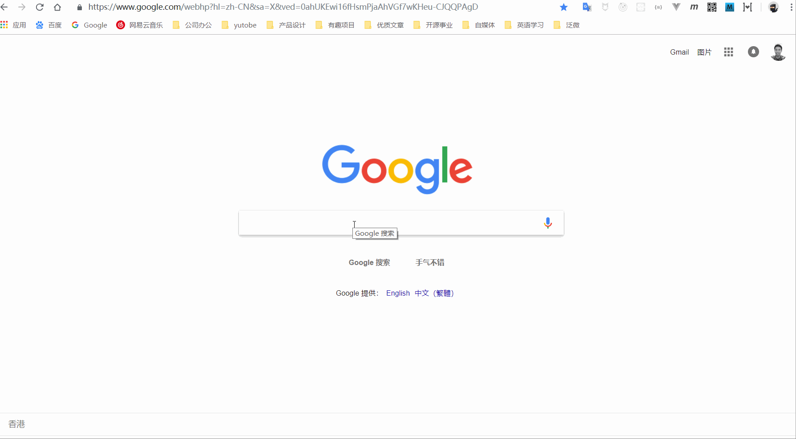

MFA 人集体翻墙阅读指北
第一堂专业课《艺术产业调查与研究》中，陆兴华老师就一再强调，全网信息检索与读书 笔记的重要性。为了帮大家打开新世界大门，在此，我和毛筱瑞索性就写了个简明教程，为大家抛砖引玉啦。
1. VPN 翻墙
所谓翻墙，是指绕过相应的IP封锁、内容过滤、域名劫持、流量限制等，实现对网络内容的访问...（摘自某度）
众所周知，咱们在国内能够访问的很多网站，都需要相关部门备案和监控，以确保我们看到的信息是符合意识形态的。BaLaBaLa 一句话概括就是，去看一些不掺杂意识形态的东西，而这些信息真相和先进思想恰恰应该为人类所共享的。
Google 搜索引擎当年退出中国，就是因为不愿意接受相关部门的监管，因此，我们只要翻墙出去使用谷歌就能搜到很多英文资料啦。至于翻墙嘛，考虑到大家都不是学计算机的，就不要搞什么黑科技搭建服务器之类的了，方便大家快速上手，还是推荐软件吧。
翻墙软件很多，我首推 蓝灯 VPN
下载后每个月都有免费的翻墙流量噢，如果不过瘾，就办一个会员，一个账号 PC 和手机都能用，以后翻墙看 Youtube, 用 Twitter, Facebook 和老外社交, 去 Dribbble 看国际一线设计作品...
从此，在互联网世界，你就是自由人了。

3. 在线翻译
使用谷歌 Chrome 浏览器，遇到高级的语法词汇，我们还可以在浏览器应用商店里安装一个翻译插件 Google 翻译，遇到不理解的地方，鼠标悬停在该句子上，就马上看到翻译啦。
还可以加入谷歌生词本哦，以后在家里看着 YouTube, 没有爱奇艺优酷那些烦人的广告啦，顺便背着小单词生活美滋滋。

3. 阅读索引
每周我们会根据老师提供的阅读资料，更新阅读索引，大家有兴趣可以试试哈。
3.1 推荐书目
这是第一周上课后陆老师在微信群里发的推荐书目，大家可以试试翻墙去搜索这些书籍咯。搜到的同学欢迎把链接发出来，我更新这里的地址，欢迎大家多多贡献咯。
波德里亚，让, 《物体系》，林志明译，上海人民出版社，2001年。
Didi-Huberman, G., Confronting Images, trans.by John Goodman, The Pennsylvania State University Press, 2005.
Levi-Strauss, C., Look, Listen, Read, trans. by W. Fowlie, BasicBooks, 1997.
列维-斯特劳斯，克劳德，《看、听、读》，顾嘉琛译，中国人民大学出版社，2006年。
列维-斯特劳斯，克劳德, 《妒忌的制陶女》
Danto, A., Horowitz, G., Huhn, T. and Ostrow, S. Wake of Art: Criticism, Philosophy, and the Ends of Taste, Routledge, 1998.
3.2 精读书目
陆老师强调，打*者为核心阅读书目，须每一人都精读！
*Bouquet. M., Museum, A Visual Anthropology, Berg, 2012.
*Groys, B. Art Power, MIT Press, 2013.
*Julian Stallabrass, A Short Introduction to Contemporary Art, 2004.
*Duncun, C., Civilizing Rituals, Rutledge, 1995.
3.3 当代本体论
以下书目是与当代策展最相关的五种当代本体论，陆老师亲自力荐：
Descola, Ph., Beyond Nature and Culture, trans. by Janet Lloyd, The Chicago University Press, 2013.
Serres, M. Natural Contract, trans. by Elizabeth MacArthur & William Paulson, The University of Michigan Press, 1995.
Kohn How Forests Think ?
Povinelli Geotologies
Latour ，The Modes of Exisistence ,2014.
Viveiros de Castro Metaphisics of Cannibalism
4. 愿景
我们只做知识的搬运工，负责帮大家搭好梯子，咱们一起翻墙出去国外，自由翻找艺术世界的宝藏，点击 阅读原文可查看更多资源。
Awesome MFA !
2018/09/23